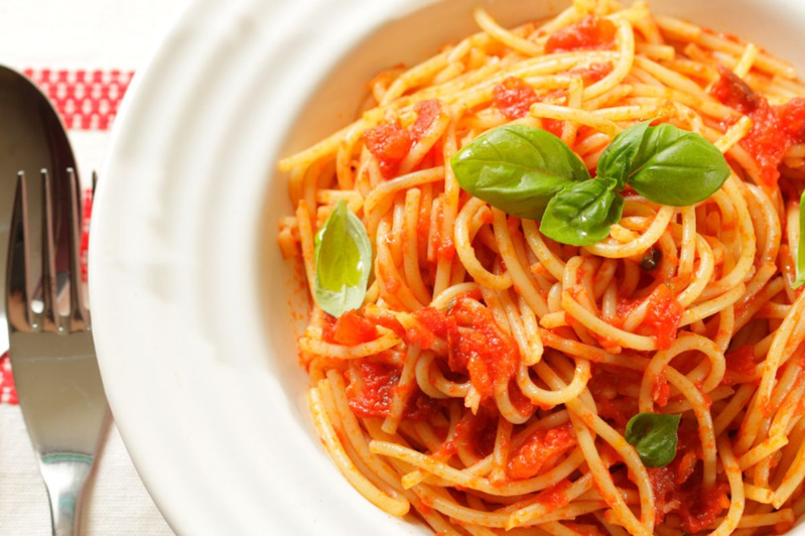

Penne al pomodoro
Ingredienti
Di seguito riportiamo gli ingredienti per preparare il nostro piatto
- 400g spaghetti
- 4 pomodori maturi
- 2 spicchi d'aglio
- 4 foglie di basilico
Preparazione
- pesare la pasta
- soffriggere l'aglio
- lasciar cuocere il pomodoro e regolare l'acidità con zucchero se necessario
- cuocere la pasta
- Saltare la pasta nella padella col pomodoro e aggiungere il basilico